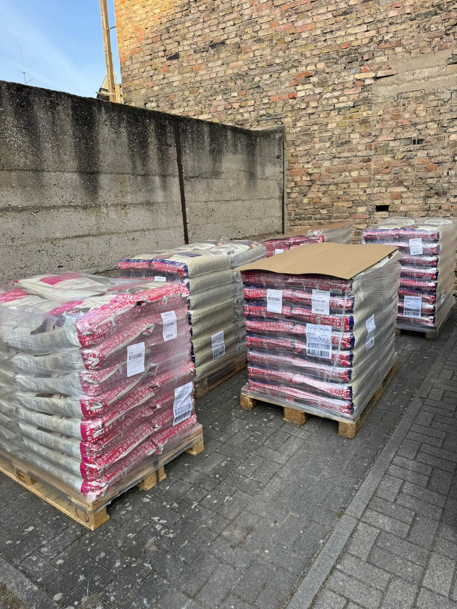
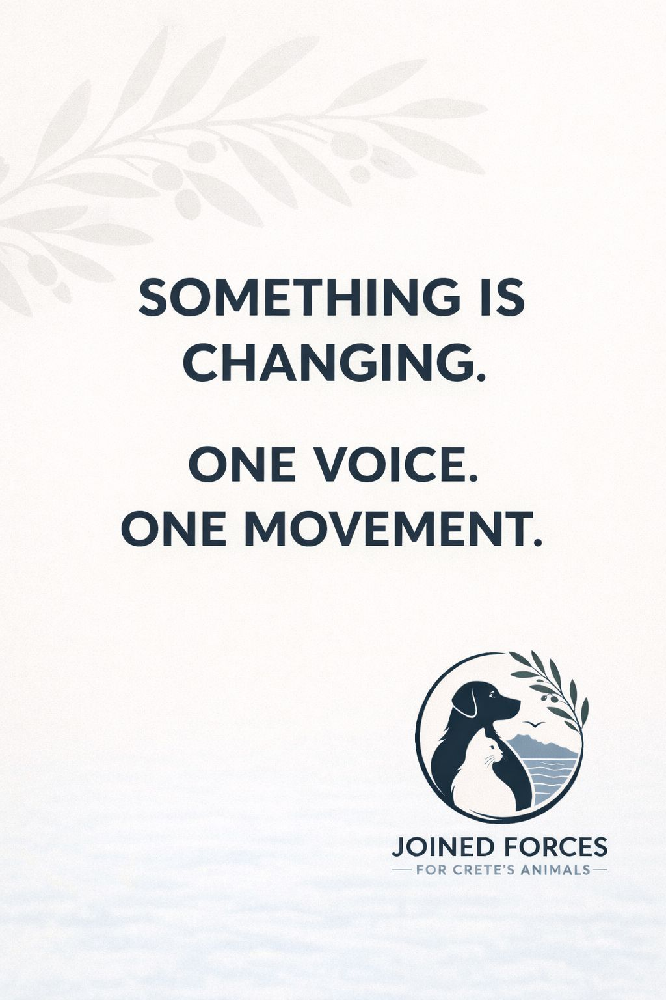

Das sind wir
Über uns
Ein kleines Team aus Powerfrauen möchten die Geschichte auf Kreta verändern. Das klingt erstmal sehr träumerisch, aber wer nicht wagt der nicht gewinnt!

Futterlieferungen
Wusstest du? Futter auf Kreta ist um ein vielfaches teurer und in geringer Auswahl verfügbar!
Wir organisieren grosse Futterlieferungen, für unterschiedlichste Tierschützer quer über die Insel verteilt.
Dies ist nur möglich mit vielen großzügigen Sachspenden und der Futterkooperation von Futterhaus und Toms Tierwelt. Auch unsere Community ist hier eine große Hilfe. (an dieser Stelle bedanke wir uns herzlich für diese tolle Unterstützung)

Mission Kastration
Auf Kretas Strassen leben Schätzungen zu Folge mehr als 1 Mio. Streuner. Immer wieder kämpfen kleine Tierschützer und Organisationen gegen Windmühlen. Meist am Rande der Erschöpfung! Unser Ziel ist es diese Menschen miteinander zu vernetzen.
Genau hier setzen wir an und haben mit anderen Vereinen die Initiative "JOINED FORCES"ins Leben gerufen.
Gemeinsam mit Cats of Crete Foundation bilden wir ein Netzwerk welches Einzelkämpfer vor Ort unterstützt.